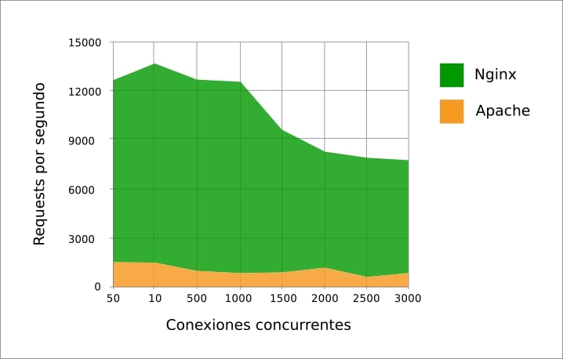
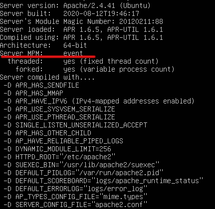
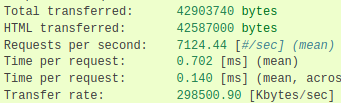
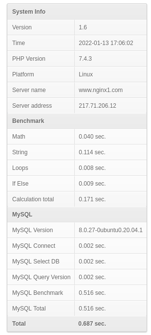

6.5. Rendimiento y optimización#
El rendimiento de un servidor web, el más utilizado, y a través del cual se prestan muchos otros servicios(por ejemplo el WedDAV), es un aspecto crítico. Para mejorar su rendimiento existen multitud de parámetros y módulos que pueden configurarse en función de nuestras necesidades. Cada servidor suele tener en su documentación oficial, una guía de como ajustar (tuning en inglés) el rendimiento (performance en inglés).
{kind=link}
6.5.1. Apache#
Tal y como indica la documentación oficial… «Apache es un servidor web de uso general, diseñado para proporcionar flexibilidad, portabilidad y rendimiento. Aunque no ha sido diseñado específicamente para establecer récords de referencia, es capaz de ofrecer un alto rendimiento en muchas situaciones. La versión 2.x contiene muchas optimizaciones adicionales para aumentar el rendimiento y la escalabilidad». La mayoria de estas opciones de optimización y mejora del rendimiento de nuestro servidor Apache tienen que ver con tres conceptos:
Opciones generales de optimización.
Configuración Caché
Módulos Apache.
Controladores(Handlers)
OPCIONES GENERALES
Cuestiones relacionadas con configuraciones de Hardware, del sistema operativo sobre el que se ejecuta Apache o de la red. Puedes encontrar un manual bastante útil en la doc. oficial.
CONFIGURACIÓN CACHÉ
Podemos configurar nuestro Apache para que guarde en memoria algunos elementos de los que ofrece el servicio (manual en la doc. oficial).
También existe la opción de ayudarnos con otros programas que actuen como intermediarios entre las peticiones de los clientes y el propio servidor web (ejemplos de esto pueden ser Memcached o Varnish).
MÓDULOS DE APACHE
La mayoría de opciones de optimización se configuran en módulos independientes de Apache, los cuales deben activarse y configurarse adecuadamente (mods_available/mods_enable)
# apachectl -VEn concreto, los MPM-Módulos de multiprocesamiento (documentación oficial) nos permiten configurar el modo en que apache gestiona las peticiones de cada cliente(navegador) conectado, desde el punto de vista en que son creados y manejados los procesos y subprocesos(hilos o threads en inglés) necesarios.
Importante
Existen 3 modos de multiprocesamiento en Apache 1. La elección de uno u otro nos va a condicionar por ejemplo el manejador (Handler) que atenderá las peticiones PHP.
- Prefork
- Worker
- Event
{kind=link}
HANDLERS
Los Handlers o Controladores son los programas encargados de ejecutar determinados ficheros del servicio web. La elección de unos u otros puede mejorar el rendimiento del servidor. El ejemplo más habitual en los actualmente es el del handler configurado en nuestro servidor para procesar las peticiones de paginas .php. Las alternativas existentes, tal y como puedes consultar en la web, son:
*mod_php
CGI/_FastCGI
FPM
Advertencia
¿Sabrías decir que tipo de configuración de MPM y handler de PHP necesitarías si fueras a alojar una web en tu servidor con una carga de actividad y número de peticiones elevadas y concurrentes?
6.5.2. NginX#
Inicialmente desarrollado para superar el rendimiento de Apache sirviendo contenidos estáticos (imágenes, css..), Nginx usa menos memoria que Apache, y puede manejar aproximadamente cuatro veces más solicitudes. Por el contrario es menos flexible que Apache (no es tan módular como este). La realidad es que la mayoría de las webs con mayor actividad suelen estar alojadas en servidores NginX. De hecho, tal y como indica su web oficial ”NGINX es bien conocido como un balanceador de carga de alto rendimiento, caché y servidor web, que alimenta más del 40% de los sitios web más activos del mundo”. Existen muchas opciones que podemos modificar para ajustar el rendimiento de nuestro servidor y que podemos encontrar en la web 2. Algunos de los concetpos y parámetros más importantes que podemos modificar son:
- worker_processes
- worker_connections
- E / S de disco
- Compresión
- .............
6.5.3. Probando el rendimiento#
Existen multitud de herramientas para hacer test de referencia (benchmarking en inglés) sobre servidores web, simulando multitud de conexiones y devolviendo los datos de tiempo y carga registrados en el servidor (Apache, NginX..) Algunos ejemplos este tipo de SW que podemos usar para obtener cálculos del rendimiento de nuestros servidrores web son:

- AB (Apache Benchmarking), incluido en la instalación de Apache.
WRK, para realizar la instalación puedes seguir lo que indica el siguiente manual.
Apache JMeter : Una de las opciones más populares en el mundo Open Source basado en Java.
Importante
Puede ser bastante útil utilizar algún código de ejemplo que podamos utilizar para realizar nuestras pruebas de rendimiento. Un ejemplo para probar PHP y MySql puedes encontrarlo en el enlace vanilla-php/benchmark-php

{kind=link}
{kind=link}
-
Digitalocean: Cómo configurar el servidor HTTP Apache con MPM ↩
-
Geekflare: Configuración de Nginx para rendimiento y seguridad ↩